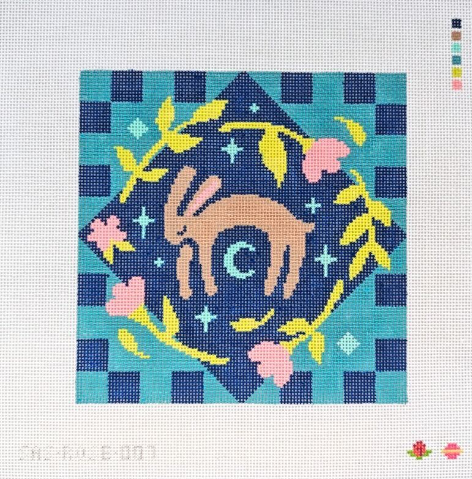
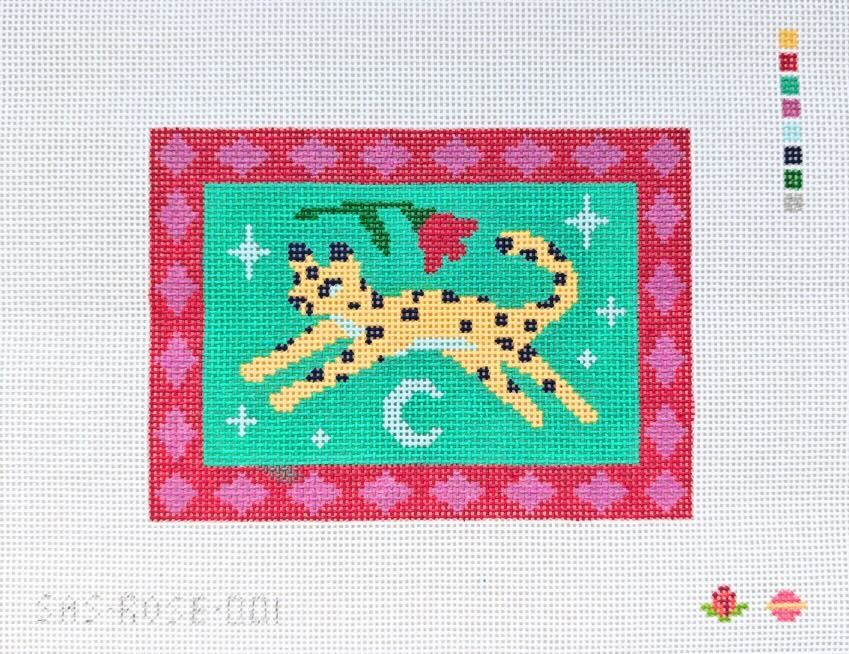

I started needlepoint in the summer of 2023 after spending time with my cousin Meghan, who works at a needlepoint store in Florida. I had never seen needlepoint before, but she did some stitching while visiting (of course), and it looked very fun and relaxing. She encouraged me to use some of my drawings as needlepoint designs. I tried it out and never looked back!

My first ever needlepoint item.
I didn't map out my designs all that much before stitching them; I would sketch roughly on canvas with paint markers, and then figure out the exact stitching as I went.

I had some aspirations to actually chart out my designs and sell them as canvases, but I was a bit intimidated to start. Enter Abbey of Saturnalia Stitching, who offered to represent my designs - and a wonderful collaboration was born! As of now I have a few designs available from her shop (and do check out her amazing designs, too!)
 

With hopefully more to come in the not-too-distant future!
-> Back home